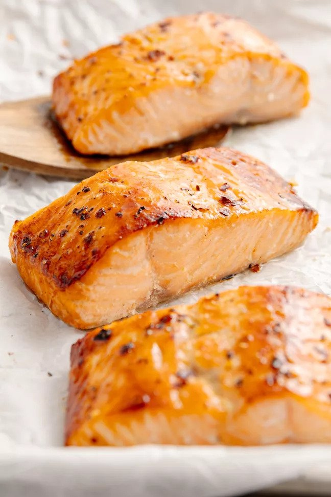

Odin's Salmon with Brown Sugar Glaze!

Tender and Flaky, Glazed Salmon!
This baked salmon shimmers with a sweet brown sugar and Dijon glaze, perfect for a quick and healthy dinner.
Ingredients:
- 2 tablespoons light brown sugar
- 1 tablespoon Dijon mustard
- 1 tablespoon honey
- 1 teaspoon kosher salt
- ¼ teaspoon freshly ground black pepper
- ¼ teaspoon crushed red pepper flakes
- 4 (8-ounce) skin-on salmon filets
Directions:
- Preheat oven to 220C (425F).
- Stir brown sugar, mustard, honey, salt, black pepper, and red pepper flakes until smooth and drizzly.
- Place the filets skin side-down with space between each filet, on the prepared sheet pan.
- Spoon the glaze onto the filets, making sure it fully covers the tops. Use the back of the spoon to spread it out.
- Bake until the tops are golden brown and crispy in spots. The salmon will feel slightly firm when pressed with your fingers and it should flake easily with a fork (12 to 14 minutes). Done when 53 (130F).